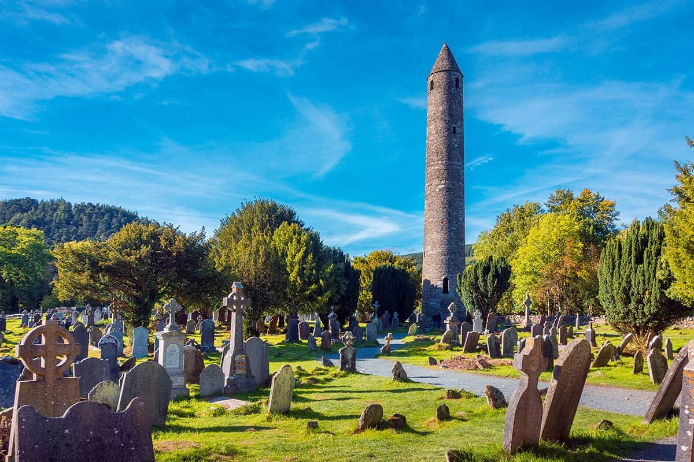

Welcome to the Glendalough Valley Website!
This is the home of Glendalough Valley one of the most beautiful tourist locations in County Wicklow Ireland let's dive right in.
Glendalough is home to a monastic settlement located in the heart of the valley, surrounded by mountains, two lakes, dense forestry and wildlife. The structures here date back from the 10th and 11th century and were restored in the late 1800s.
This includes the iconic roundtower featured in many pictures and a common backdrop for photos with friends and family. With many forest trails and the boardwalk, a local carpark and scenary found nowhere else. Come visit Glendalough Valley today, and take home a memory for a lifetime.
